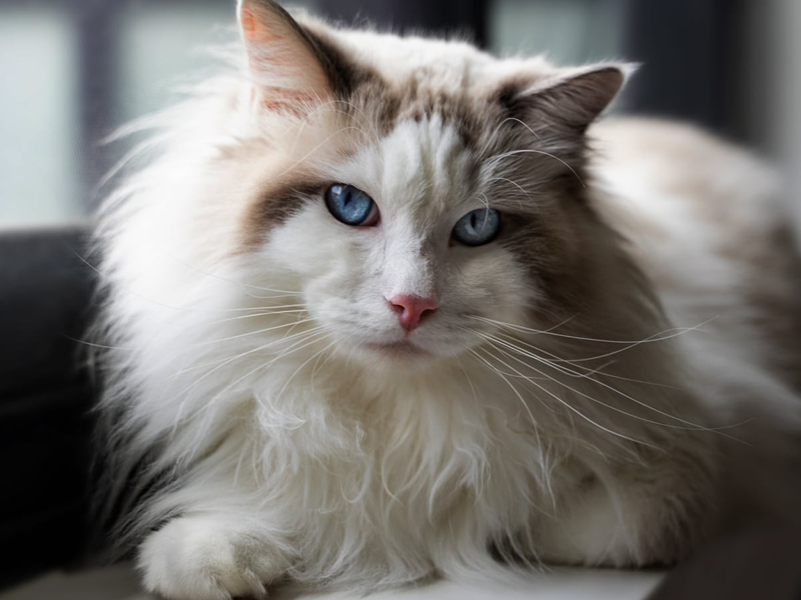

Home
Ragdoll
Maine Coon
Sphynx
Scottish Fold
Bengal
Ragdoll cats are known to follow people around and that makes them considered, dog-like cats. They are not usually aggressive to other animals and they are pretty calm natured. If you want a cat that likes to sit on your lap and play fetch, this is the cat for you.
The Ragdoll cat likes to stay close to the ground as opposed to the average cat that likes to climb and be above everyone.
Ragdoll cats are one of the larger cat breeds. Females are about 8-15 pounds while the male cat is 12-20 pounds. They require more brushing because their coats are long and need to be kept up with.